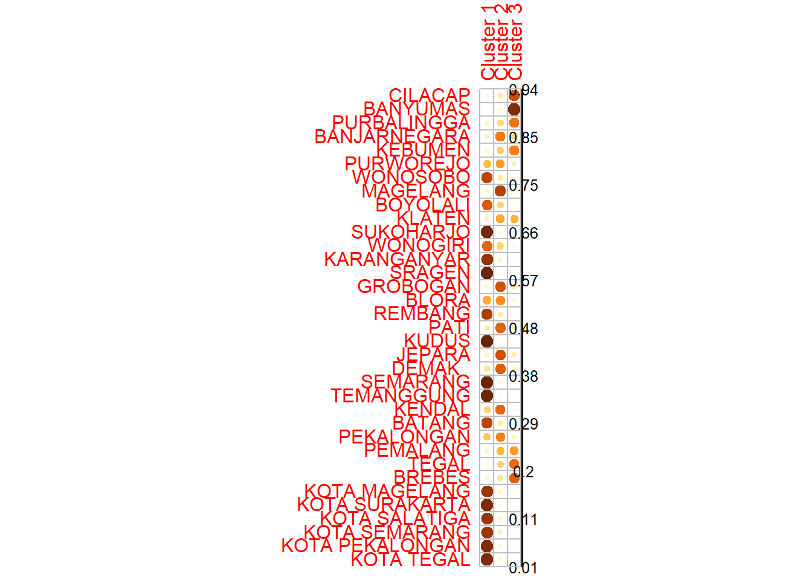

Buku ini sedang dalam tahap tinjauan terbuka. Kami ingin umpan balik Anda untuk membuat buku ini lebih baik bagi. Anda dapat memberikan anotasi pada beberapa teks dengan memilihnya menggunakan kursor dan kemudian klik “Beri Anotasi” pada menu pop-up. Anda juga dapat melihat anotasi orang lain: klik tanda panah di sudut kanan atas halaman
2.1 Eksperimeen Fuzzy C-Means
2.1.3 Hasil Clustering
## Warning: package 'ppclust' was built under R version 4.4.1## Cluster 1 Cluster 2 Cluster 3
## CILACAP 0.09432155 0.19959671 0.70608174
## BANYUMAS 0.03242738 0.09071562 0.87685700
## PURBALINGGA 0.12503329 0.28641412 0.58855259
## BANJARNEGARA 0.15770912 0.56797934 0.27431153
## KEBUMEN 0.12183017 0.32490172 0.55326811
## PURWOREJO 0.37665821 0.46825795 0.15508384
## WONOSOBO 0.73997169 0.21208577 0.04794255
## MAGELANG 0.12565978 0.75569090 0.11864932
## BOYOLALI 0.65917928 0.29335751 0.04746322
## KLATEN 0.15366683 0.44008300 0.40625017
## SUKOHARJO 0.90659203 0.07528219 0.01812578
## WONOGIRI 0.62649398 0.31366262 0.05984340
## KARANGANYAR 0.83280963 0.13567704 0.03151333
## SRAGEN 0.92987167 0.05643609 0.01369224
## GROBOGAN 0.10906165 0.68584478 0.20509357
## BLORA 0.42364979 0.51050938 0.06584083
## REMBANG 0.77496097 0.18988443 0.03515460
## PATI 0.18226626 0.63754615 0.18018760
## KUDUS 0.93999864 0.04642043 0.01358093
## JEPARA 0.13357477 0.69208387 0.17434136
## DEMAK 0.22405973 0.65516864 0.12077163
## SEMARANG 0.92443899 0.06180543 0.01375558
## TEMANGGUNG 0.92181846 0.06302723 0.01515432
## KENDAL 0.30783534 0.62112953 0.07103512
## BATANG 0.74568211 0.20285008 0.05146780
## PEKALONGAN 0.33879435 0.54367557 0.11753007
## PEMALANG 0.13508254 0.39383397 0.47108349
## TEGAL 0.08391671 0.30162583 0.61445746
## BREBES 0.11958050 0.23941019 0.64100931
## KOTA MAGELANG 0.82227544 0.12644712 0.05127744
## KOTA SURAKARTA 0.88284897 0.08663885 0.03051218
## KOTA SALATIGA 0.82356236 0.12550332 0.05093432
## KOTA SEMARANG 0.81177689 0.14670134 0.04152177
## KOTA PEKALONGAN 0.87988142 0.08784985 0.03226874
## KOTA TEGAL 0.88100104 0.08711147 0.03188749## Warning: package 'corrplot' was built under R version 4.4.1## corrplot 0.95 loaded
## X1 X2 X3 X4 X5 X6 X7 X8 X9 X10
## Cluster 1 2.22 2.36 1.66 3.25 2.61 1.76 1.40 2.64 3.94 0.58
## Cluster 2 3.84 5.15 1.93 4.64 4.04 3.78 8.71 4.45 3.99 3.09
## Cluster 3 3.30 2.19 3.80 3.13 3.73 3.34 8.71 7.41 3.21 4.65## X1 X2 X3 X4 X5 X6 X7
## Cluster 1 1.724771 1.743303 1.432408 1.706002 1.626688 1.504833 1.335312
## Cluster 2 3.418238 4.025821 3.497306 3.657048 3.843888 3.477061 3.074419
## Cluster 3 5.001721 4.041093 5.531054 4.669414 4.638562 5.500335 6.458007
## X8 X9 X10
## Cluster 1 1.021470 1.697120 1.056498
## Cluster 2 3.057133 3.802309 3.529256
## Cluster 3 7.009924 4.458629 6.4744072.1.4 Hasil Clustering FCM
## Summary for 'res.fcm'
##
## Number of data objects: 35
##
## Number of clusters: 3
##
## Crisp clustering vector:
## [1] 3 3 3 2 3 2 1 2 1 2 1 1 1 1 2 2 1 2 1 2 2 1 1 2 1 2 3 3 3 1 1 1 1 1 1
##
## Initial cluster prototypes:
## X1 X2 X3 X4 X5 X6 X7 X8 X9 X10
## Cluster 1 2.22 2.36 1.66 3.25 2.61 1.76 1.40 2.64 3.94 0.58
## Cluster 2 3.84 5.15 1.93 4.64 4.04 3.78 8.71 4.45 3.99 3.09
## Cluster 3 3.30 2.19 3.80 3.13 3.73 3.34 8.71 7.41 3.21 4.65
##
## Final cluster prototypes:
## X1 X2 X3 X4 X5 X6 X7
## Cluster 1 1.724771 1.743303 1.432408 1.706002 1.626688 1.504833 1.335312
## Cluster 2 3.418238 4.025821 3.497306 3.657048 3.843888 3.477061 3.074419
## Cluster 3 5.001721 4.041093 5.531054 4.669414 4.638562 5.500335 6.458007
## X8 X9 X10
## Cluster 1 1.021470 1.697120 1.056498
## Cluster 2 3.057133 3.802309 3.529256
## Cluster 3 7.009924 4.458629 6.474407
##
## Distance between the final cluster prototypes
## Cluster 1 Cluster 2
## Cluster 2 42.66853
## Cluster 3 165.71763 48.57171
##
## Difference between the initial and final cluster prototypes
## X1 X2 X3 X4 X5 X6
## Cluster 1 -0.4952294 -0.6166973 -0.2275916 -1.5439977 -0.9833119 -0.2551670
## Cluster 2 -0.4217618 -1.1241790 1.5673058 -0.9829516 -0.1961115 -0.3029386
## Cluster 3 1.7017214 1.8510934 1.7310540 1.5394145 0.9085617 2.1603353
## X7 X8 X9 X10
## Cluster 1 -0.06468801 -1.618530 -2.2428795 0.4764979
## Cluster 2 -5.63558085 -1.392867 -0.1876907 0.4392557
## Cluster 3 -2.25199282 -0.400076 1.2486289 1.8244068
##
## Root Mean Squared Deviations (RMSD): 5.105474
## Mean Absolute Deviation (MAD): 121.3084
##
## Membership degrees matrix (top and bottom 5 rows):
## Cluster 1 Cluster 2 Cluster 3
## CILACAP 0.09432155 0.19959671 0.7060817
## BANYUMAS 0.03242738 0.09071562 0.8768570
## PURBALINGGA 0.12503329 0.28641412 0.5885526
## BANJARNEGARA 0.15770912 0.56797934 0.2743115
## KEBUMEN 0.12183017 0.32490172 0.5532681
## ...
## Cluster 1 Cluster 2 Cluster 3
## KOTA SURAKARTA 0.8828490 0.08663885 0.03051218
## KOTA SALATIGA 0.8235624 0.12550332 0.05093432
## KOTA SEMARANG 0.8117769 0.14670134 0.04152177
## KOTA PEKALONGAN 0.8798814 0.08784985 0.03226873
## KOTA TEGAL 0.8810010 0.08711147 0.03188749
##
## Descriptive statistics for the membership degrees by clusters
## Size Min Q1 Mean Median Q3 Max
## Cluster 1 17 0.6264940 0.7749610 0.8295979 0.8328096 0.9065920 0.9399986
## Cluster 2 11 0.4400830 0.5270925 0.5979972 0.6211295 0.6705067 0.7556909
## Cluster 3 7 0.4710835 0.5709104 0.6359014 0.6144575 0.6735455 0.8768570
##
## Dunn's Fuzziness Coefficients:
## dunn_coeff normalized
## 0.5999684 0.3999525
##
## Within cluster sum of squares by cluster:
## 1 2 3
## 130.5953 200.0818 220.3251
## (between_SS / total_SS = 61.98%)
##
## Available components:
## [1] "u" "v" "v0" "d" "x"
## [6] "cluster" "csize" "sumsqrs" "k" "m"
## [11] "iter" "best.start" "func.val" "comp.time" "inpargs"
## [16] "algorithm" "call"2.1.6 Display the best solution
## [1] 360.931 360.931 360.931 360.931 360.931## [1] 70 76 82 88 75## [1] 12.1.7 Display the summary of clustering results
## Summary for 'res.fcm'
##
## Number of data objects: 35
##
## Number of clusters: 3
##
## Crisp clustering vector:
## [1] 3 3 3 2 3 2 1 2 1 2 1 1 1 1 2 2 1 2 1 2 2 1 1 2 1 2 3 3 3 1 1 1 1 1 1
##
## Initial cluster prototypes:
## X1 X2 X3 X4 X5 X6 X7 X8 X9 X10
## Cluster 1 3.30 2.19 3.80 3.13 3.73 3.34 8.71 7.41 3.21 4.65
## Cluster 2 1.01 1.31 0.55 0.78 1.25 0.95 2.40 0.75 0.20 0.03
## Cluster 3 3.63 5.77 3.65 3.99 6.90 4.08 3.24 3.09 4.34 2.03
##
## Final cluster prototypes:
## X1 X2 X3 X4 X5 X6 X7
## Cluster 1 1.724771 1.743303 1.432408 1.706002 1.626688 1.504833 1.335312
## Cluster 2 3.418238 4.025821 3.497306 3.657048 3.843888 3.477061 3.074419
## Cluster 3 5.001721 4.041093 5.531054 4.669414 4.638562 5.500335 6.458007
## X8 X9 X10
## Cluster 1 1.021470 1.697120 1.056498
## Cluster 2 3.057133 3.802309 3.529256
## Cluster 3 7.009924 4.458629 6.474407
##
## Distance between the final cluster prototypes
## Cluster 1 Cluster 2
## Cluster 2 42.66853
## Cluster 3 165.71763 48.57171
##
## Difference between the initial and final cluster prototypes
## X1 X2 X3 X4 X5 X6
## Cluster 1 -1.575229 -0.4466973 -2.367592 -1.4239977 -2.103312 -1.835167
## Cluster 2 2.408238 2.7158210 2.947306 2.8770484 2.593888 2.527061
## Cluster 3 1.371721 -1.7289066 1.881054 0.6794145 -2.261438 1.420335
## X7 X8 X9 X10
## Cluster 1 -7.3746880 -6.388530 -1.5128795 -3.593502
## Cluster 2 0.6744191 2.307133 3.6023093 3.499256
## Cluster 3 3.2180072 3.919924 0.1186289 4.444407
##
## Root Mean Squared Deviations (RMSD): 9.385279
## Mean Absolute Deviation (MAD): 252.7264
##
## Membership degrees matrix (top and bottom 5 rows):
## Cluster 1 Cluster 2 Cluster 3
## CILACAP 0.09432155 0.19959671 0.7060817
## BANYUMAS 0.03242738 0.09071562 0.8768570
## PURBALINGGA 0.12503329 0.28641412 0.5885526
## BANJARNEGARA 0.15770912 0.56797934 0.2743115
## KEBUMEN 0.12183017 0.32490172 0.5532681
## ...
## Cluster 1 Cluster 2 Cluster 3
## KOTA SURAKARTA 0.8828490 0.08663885 0.03051218
## KOTA SALATIGA 0.8235624 0.12550332 0.05093432
## KOTA SEMARANG 0.8117769 0.14670134 0.04152177
## KOTA PEKALONGAN 0.8798814 0.08784985 0.03226873
## KOTA TEGAL 0.8810010 0.08711147 0.03188749
##
## Descriptive statistics for the membership degrees by clusters
## Size Min Q1 Mean Median Q3 Max
## Cluster 1 17 0.6264940 0.7749610 0.8295979 0.8328096 0.9065920 0.9399986
## Cluster 2 11 0.4400830 0.5270925 0.5979972 0.6211295 0.6705067 0.7556909
## Cluster 3 7 0.4710835 0.5709104 0.6359014 0.6144575 0.6735455 0.8768570
##
## Dunn's Fuzziness Coefficients:
## dunn_coeff normalized
## 0.5999684 0.3999525
##
## Within cluster sum of squares by cluster:
## 1 2 3
## 130.5953 200.0818 220.3251
## (between_SS / total_SS = 61.98%)
##
## Available components:
## [1] "u" "v" "v0" "d" "x"
## [6] "cluster" "csize" "sumsqrs" "k" "m"
## [11] "iter" "best.start" "func.val" "comp.time" "inpargs"
## [16] "algorithm" "call"